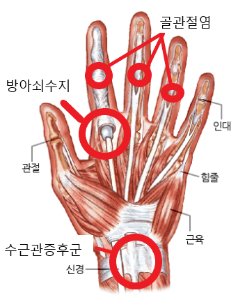

부위 별 설명
-목차-
좌측 부위 명 태그를 눌러 확인 가능!
간략한 해당 부위의 전범위적 증상 설명
그에 해당되는 흔한 현대인 질병들 이름
상세 부위(흔히 발생하는 통증의 원인 부위만 명시)
증상(명확한 증상의 경우 추가 설명)
-두통-
바이러스 질병 외 현대인들이 자주 느끼는 두통은 주로 목의 신경 압박때문입니다.
이는 혈액 순환, 감각 이상, 현기증 , 저림, 두통, 타부위 통증 등을 일으킵니다.
단 비슷한 증상인 두통, 어지럼증, 일시적 반신 마비, 언어 및 시야 장애 등의 증상들은 뇌졸중의 전조 증상일수도 있습니다.
-목-
대체로 근육으로 부터의 문제가 근본적인 계기가 아니라 경추의 추간판의 탈출 or 부음으로 신경 압박과 혈액순환 방해가 원인이 됩니다.
해당되는 질병:
추간판 탈출 (4,5 or 5,6 디스크), 척추관 협착증, 거북목/일자목, 라운드숄더, 염좌.
상세 부위:
흉쇄유돌근,후두근,경추신전근(경판상근,두판상근,경박극근),사각근
증상:
공통적(통증 범위는 조금씩 다름): 두통(정수리,뒤통수,띠를 두른듯한 통증 등..) , 안구 피로, 동작 범위 감소, 통증, 저림, 감각이상, 어깨 및 점점 퍼져나가는 통증.
경반극근,상부승모근: 약화시 머리 엎드린상태에서 머리 들어올리기힘듬,머리 무거움, 자주 턱 내밀면서 머리 들어올림
-어깨-
어깨의 경우 지속된 안좋은 자세로 인해 근육 퇴화로 목 어꺠부근 통증을 야기하며
심할 경우 팔 동작, 경추 건강에도 영향을 줍니다.
해당되는 질병
충돌증후군과 이로 인한 관절염, 라운드 숄더, 거북목
상세 부위
승모근, 견갑거근,회전근(극상,극하,소원),삼각근
증상:
어깨 바깥쪽 동작의 경우. 보통 삼각근은 정상 작동하지만 회전근의 퇴화로 인해 근육 맞물림이 정상적이지 않게 되어 뼈끼리 충돌합니다. 이게 반복되면 연골 뿐만아니라 골격에도 손상을 줍니다.
승모근,견갑거근은 경추 통증의 주원인중 하나이며 지속된 안좋은자세
(ex: 컴퓨터,핸드폰,책 오래보기) 로 견갑거근의 단축, 승모근의 경직이 주 원인 입니다.
-등-
흉추라고 불리는 등의 경우, 매우 견고한편이고 허리나 목에 비해 무게도 많이 받지 않기에 특별히 물리적 사고가 난것이 아닌이상 원인이 되지는 않습니다.
그러므로, 등이 아픈경우 경추(목) 과 관련지어 주로 진단하거나 물리적 손상을 의심합니다.
해당되는 질병
주로 목, 어깨 관련 질병과 연관됩니다. 해당 내용을 읽어보세요.
-허리-
허리(요추) 인체 구조상 가장 많은 무게를 부담하게끔 만들어져있어, 핸드폰,컴퓨터로 인해 증가한 경추 디스크와 달리 옛날부터 디스크가 흔히 발생합니다.
해당되는 질병
전,측면,후방 추간판 탈출(디스크), 척추관 협착증, 척추측만증
상세 부위
척추기립근(장늑근,최장근, 극근), 요방형근 , 압박골절(척추뼈 내려앉음)
증상:
하체 자주저림, 앉았다 일어나면 잠시 감각 없음, 요통(허리아픔), 하지방사통
디스크의 경우 팽륜, 돌출, 탈출, 부골화 로 4단계가 있으며
요통만 호소할때가 그나마 섬유륜이 안찢어져서 2단계 전이 치료하기 적절한 상황입니다.
또한 이런 디스크를 가속화 시키는 척추 측만증!! 바른자세는 독자가 신경써야합니다.
-골반-
고관절(골반) 은 자세와 직결되는 관절이며, 인체의 균형을 잡아주는 역할인 만큼
고관절이 망가지면 현대인들이 자주 걸리는 허리,무릎 질환의 근본적 원인이 됩니다.
움직임,부하도 많은데 근육,인대또한 많아 여러 질환이 발생합니다.
해당되는 질병
이상근 증후군, 고관절염,천장관절 증후군, 점액낭염
상세 부위
장요근, 대둔근, 이상근
증상:
요추 아래쪽에서부터 하체까지 저림,당김,관절염, 무릎~발목까지 신경통
-팔꿈치-
동작이 많은 부위인 팔은 자체적으로 손상도 일어나지만, 경추로부터 신경통이 전이될수도 있습니다.
해당되는 질병
외반신전 과부하, 테니스 엘보
상세 부위
수근신근
증상:
테니스엘보는 수근신근에서 발생하고, 무언가를 쥐고 받아치는 운동이 자주 일어 났을때 주로 겪음. 무언가를 드는 자세할때 통증을 느끼게함.
외반신전 과부하는 큰동작으로 무언가를 많이 던지는 경우 (ex 택배 상하차, 야구, 볼링 등의 운동..) 상완두의 소골과 요골의 충돌로 연골,골절 등을 일으킴.
-손목,손-
인체가 가장 자세하게 동작가능한 부위임에도 척추와 같이 부하에 오래 버틸 수있는 설계가 되어있지 않아, 손을 많이 쓰는 현대인은 관련질환에 매우 취약합니다.
해당되는 질병
수근관증후군(터널,요측굴,팔굽꿀..), 방아쇠 수지, 드뵈르뱅 건초염, 골 관절염
상세 부위
 빨간 동그라미= 질병이 자주 일어남
증상:
손 저림, 통증, 손마디 굵어짐,
동작 이상(ex 손 구부러짐) , 감각상실, 쇠약
-다리-
다리의 경우 저림 증상이 대부분입니다.
공통적으로 비활동적으로 오래 앉아 있거나 서있는 경우 나타나며, 근력약화와 동시에 디스크탈출 혹은 혁착으로 신경의 압박 때문이거나/ 혈액순환의 정체가 문제 입니다.
해당되는 질병
허리디스크 + 척추관 협착증(신경압박), 하지 정맥,
간략한 판별법:
다리에 혈관이 많이 튀어나와있는데 저리고 쑤시다 = 하지정맥 기존에도 목 허리가 자주 아픈편이다 = 골반, 척추의 문제.
-무릎-
무릎의 경우 하중을 많이 받는 부위이기에,
해당되는 질병
연골 연화 밑 충돌로 인한 손상, 관절염, 인대 염좌 밑 파열, 허리디스크
상세 부위 (끝에 근 생략)
전방 통증: 대퇴사두
후방 통증: 슬괵,슬와,비복
내측 통증: 봉공,내전,박,박건양,박망양
대퇴,막장,대둔,장경인대,슬와
증상:
인대,신경 문제: 저림,근력약화,주변 부위 통증, 감각이상, 부음 근골격계 문제: 근력약화로 인해 가중된 무릎의 부하로 연골,관절 손상, 부음
-발목-
1차 충격 쿠션역할을 하는 발이기에 위로부터 통증이 전이 되기보단, 사고로 인한 경우가 많습니다.
허리 디스크, 협착증이 심하게 진행된경우 발 끝까지 저림이 진행됩니다만
보통 높은곳에서 내려앉았을때, 발을 삐끗했을때 등 충격으로 내원하게 됩니다.
해당되는 질병
족저근막염, 족관절 염좌 외측, 족관절 염좌 내측, 아킬레스파열
상세 부위
이미지 첨부.
증상:
신경 문제: 근력약화,저림, 감각이상 족저근막염의 경우 쿠션 역할을 하는 중골 부위에서 너무 많은 충격을 연속적으로 누적됬을 시, 관절염으로 발생합니다. 그외 염좌,밑 인대파열의 경우: 해당 부위 부음